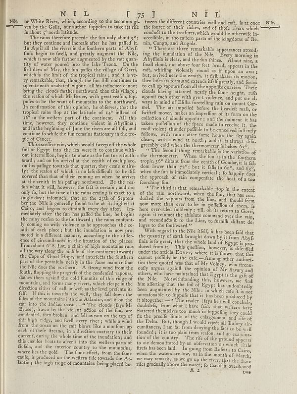

Scan ID britannica:309f765b1ecc83e0a7f7762e44b4a927a7555443:train:318
Image SHA-256 9d0e08d8ed22f5b38cf346df295e4940256ee6904fa14f8fb66cb815b7d8a1d6
Status: ok. Running header: N I L 75 J N I L (catchword). Removed page furniture: Page-header: N I L 75 J N I L, Page-footer: 2, Page-footer: 1 /.
PDF · raw Parse reply · LaTeX
Entries: E0019

| # | Class | Box | Parse 3.5 | Used text | Source |
|---|---|---|---|---|---|
| 1 | Text | [0.0264, 0.0453, 0.4697, 0.0922] | NRls. or White River, which, according to the accounts given by the Galla, our author fuppoles to take its rise in about 9 north latitude. | Nile. or White River, which, according to the accounts given by the Galla, our author supposes to take its rise in about 9° north latitude. | super_vl |
| 2 | Text | [0.0566, 0.0914, 0.4688, 0.3609] | The rains therefore precede the fun only about 6°; but they continue and incredible after he has puffed it. In April all the rivers in the foubern parts of Ablyr finis begin to softw), and greatly augment the Nile which is now alfo farther augmented by the vaft quantity of water poured into the Nile Tazan. On the first day of May, the fun paths the village of Cerrij, which is the limit of the tropical rains, and it is very remarkable, that, though the fun still continues to cooperate with enhanced region. All his influence cannot bring the clouds further northward than this village; the restor | The rains therefore precede the fun only about 5°; but they continue and increase after he has passed it. In April all the rivers in the southern parts of Abyssinia begin to swell, and greatly augment the Nile, which is now also farther augmented by the vast quantity of water poured into the lake Tzana. On the first days of May, the fun passes the village of Gerri, which is the limit of the tropical rains; and it is very remarkable, that, though the fun still continues to operate with unabated vigour, all his influence cannot bring the clouds farther northward than this village; the reason of | super_vl |
| 3 | Text | [0.0547, 0.3602, 0.4512, 0.9336] | This sacrifice rain, which would freeze off the whole foil of Egypt into the few were it to continue with out intermition, begins to share as the fun turns fouthward, and on his arrival at the zenith of each place, on his judged towards that quarter, they cease entire ly: the reason of which is no left difficult to be dif- covered than that of their coming on when he arrives at the same in a jingling southward. Be the rea fan what it will, however, the fact is certain; and not only lo, but the time of the main catalog is each to a finglebay i fishomuch, that so the yach of September her the Ni | This excessive rain, which would sweep off the whole foil of Egypt into the sea were it to continue without intermission, begins to abate as the sun turns southward; and on his arrival at the zenith of each place, on his passage towards that quarter, they cease entirely: the reason of which is no less difficult to be discovered than that of their coming on when he arrives at the zenith in his passage northward. Be the reason what it will, however, the fact is certain; and not only so, but the time of the rains ceasing is exact to a single day; insomuch, that on the 25th of September the Nile i | super_vl |
| 4 | Text | [0.4678, 0.0477, 0.874, 0.1203] | tween the different countries west and caft, is at once the fourest of their riches, and of those rivers which consider to the treafures, which would be otherwise inaccessible, in the eastern parts of the Kingdoms of Bo- nin, Congo, and Angola. | tween the different countries weft and east, is at once the source of their riches, and of those rivers which conduct to the treafures, which would be otherwise inaccessible, in the eastern parts of the kingdoms of Benin, Congo, and Angola. | super_vl |
| 5 | Text | [0.4668, 0.1172, 0.8721, 0.3781] | There were three remarkable appearances attacking the inundation of the Nile. Every morning in Abyffinia is clear, and the fun thines. About nine, a final cloud, not about four feet to break appears in the early whiting violently around as it upon an axis, but, arrived near the zenith, it frit abates its motions, then find us its form, and extends itself greatly, and forms to call up oppsons from all the specific quarters. These clouds having attained nearly the fame height, ruth again east and other with greet violences, and put me all in mind of Elilin interesting rain on month Carmel. The a | There are three remarkable appearances attending the inundation of the Nile. Every morning in Abyssinia is clear, and the sun shines. About nine, a small cloud, not above four feet broad, appears in the east, whirling violently round as if upon an axis; but, arrived near the zenith, it first abates its motion, then loses its form, and extends itself greatly, and seems to call up vapours from all the opposite quarters. These clouds having attained nearly the same height, rush against each other with great violence, and put me always in mind of Elijah foretelling rain on mount Carmel. The air im | super_vl |
| 6 | Text | [0.4658, 0.4703, 0.8604, 0.5813] | 4 The third is that remarkable flop in the extent of the rain northward, when the fun, that has concluded the vapour from the lines, and should form now more than ever to be in poffelion of them, is here over-ruiled suddenly; till, on its return to Corrir, again it returns the abloid command over the rain, and reconciledts it to the Line, to ten filn秆 de- lages to the forthand.? | The third is that remarkable flop in the extent of the rain northward, when the fun, that has conducted the vapours from the line, and should seem now more than ever to be in poffelion of them, is here over-ruled suddenly; till, on its return to Gorri, again it refuses the absolute command over the rain, and reconduits it to the Line, to furnish distant deluges to the southward. | super_vl |
| 7 | Text | [0.4648, 0.5766, 0.8545, 0.9383] | We regled to the Nile life!I, it has been fatal that the quantity of earth brought down by it from Abyfkina is to great, that the whole land of Egypt is produced from it. This question, however, is disculted under the article [2/vary, where it is flown than this cannot potibily be the cake.--Among other authorities that quoted was that of Mr Volory, who frequentally agree against the opinion of Mr Sivory and others, who have maintained that Egypt is the gift of the Nile. nevertheless they, however, we had him atturting that the fall of Egypt has undoubtedly been augmented by the Nile in which | With regard to the Nile itself, it has been said that the quantity of earth brought down by it from Abyssinia is so great, that the whole land of Egypt is produced from it. This question, however, is discussed under the article Egypt, where it is shown that this cannot possibly be the case.—Among other authorities there quoted was that of Mr Volney, who frequently argues against the opinion of Mr Savary and others, who have maintained that Egypt is the gift of the Nile. Notwithstanding this, however, we find him asserting that the soil of Egypt has undoubtedly been augmented by the Nile : in w | super_vl |
Britannica scans: National Library of Scotland, CC0 1.0. Wikipedia text: Wikipedia contributors, CC BY-SA 4.0, revision links on each page. Generated 2026-10-18T13:26:14+00:00.